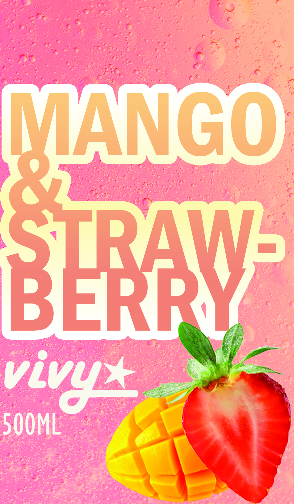

Vivy adlı meyve suyu markası için hazırladığım ambalaj ve etiket tasarımı. Tasarımın odağında, mango ve çilek lezzetlerinin verdiği tazeleyici ve dinamik hissi yansıtmak yer alıyordu.
Bunu sağlamak için cesur, kalın ve eğlenceli bir tipografi tercih edildi. Şeftali ve pembe tonlarının hakim olduğu renk paleti, doğrudan ürünün doğal içeriğine gönderme yaparken, gerçekçi meyve illüstrasyonları tasarımı daha iştah açıcı ve samimi bir hale getirdi.